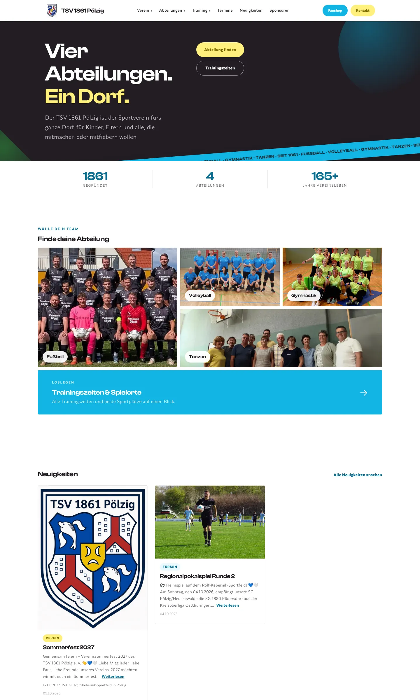
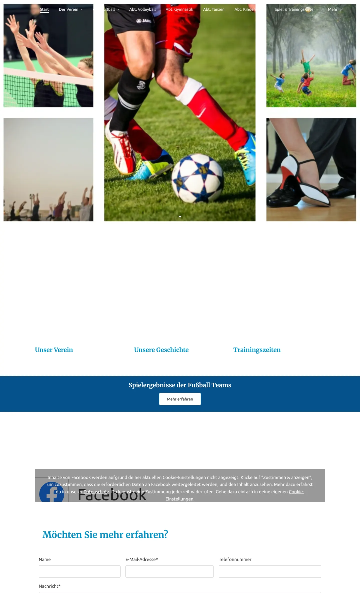

TSV 1861 Pölzig
- Auftraggeber
- Sportverein, Pölzig
- Leistung
- Konzept, Design, Umsetzung
- Vorher
- Jimdo-Baukasten
- Nachher
- HTML, CSS, JavaScript
Ausgangslage
Vier Abteilungen, über 160 Jahre Vereinsgeschichte, aber eine Website, auf der man genau das kaum fand. Die alte Jimdo-Seite zeigte allgemeine Sportmotive, viel leeren Raum und versteckte Trainingszeiten in Untermenüs. Auf dem Handy wurde es noch unübersichtlicher.
Was sich geändert hat
- Eine klare Botschaft gleich oben: vier Abteilungen, ein Dorf.
- Abteilungsfinder mit echten Mannschaftsfotos statt Stockbildern.
- Trainingszeiten und beide Sportplätze mit einem Klick erreichbar.
- Neuigkeiten und Termine direkt auf der Startseite.
- Nur technisch notwendige Funktionen, Karten erst nach Zustimmung.
- Von Grund auf für das Handy gebaut.

